Temukan gambaran utuh diri sebagai landasan keputusan studi, karir, dan peranmu dalam 20 menit.

Lakon adalah kata multimakna.
Lakon menggambarkan peran, cerita, dan peristiwa yang dijalani seseorang dalam hidupnya. Unik, namun memiliki pola. Lakon adalah perjalanan hidup kamu, dan peran yang kamu miliki di dalamnya.
Lakon™ Profile adalah assessment untuk Peminatan, Potensi, dan Peran — membantu kamu memetakan studi, profesi, dan role dalam karir yang paling tepat untukmu. Peran dan cerita yang cocok memberikan kepuasan hati, dan potensi terbesar untuk sukses.
Assessment karir yang berakar pada pemahaman diri yang mendalam.
Lakon™ dibangun di atas dua kerangka yang sudah lama dipakai di dunia karir dan kepribadian: RIASEC dari John Holland untuk memetakan minat, dan tipologi temperamen Keirsey untuk memetakan cara bergerak. Yang Lakon lakukan adalah menyatukan dua pemetaan yang selama ini berjalan terpisah.
6 Kelompok Peran atas peminatan, bertemu 4 Watak penentu proses kerja dan sikap, menghasilkan 24 Paraga — tipe karakter unik dengan kekuatan, tantangan, ketertarikan, dan kecocokan perannya sendiri-sendiri.
Hasil dasar dan profil Paraga-mu gratis selamanya. Laporan lengkap tersedia berbayar, dan kamu bisa memutuskan setelah melihat hasilnya.
Buka laporan penuh atau sesi konsultasi langsung dengan konsultan kami.